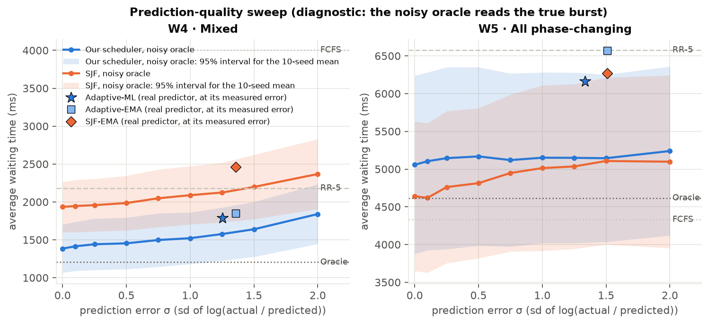
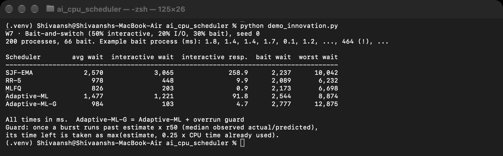
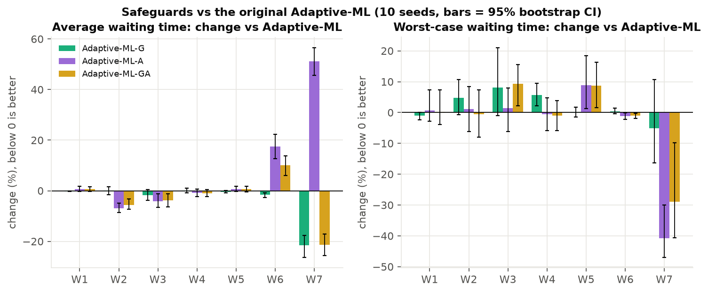

| Shivaansh Aggarwal | 24BCE0883 |
| Devansh Sharma | 24BCE0717 |
This document evaluates the adaptive scheduler of Review 2, compares it with existing systems, and gives the conclusion and future work. It also examines what happens when the predictions are wrong.
What distinguishes this implementation
Shortest-job-first gives the lowest average waiting time, but it needs the length of the next CPU burst, which the operating system does not know [1]. Predicting that length, classically by exponential averaging and here with a learned model, makes SJF-like ordering possible. A scheduler built this way, however, acts on each prediction as if it were true. When a burst runs longer than predicted, the scheduler has no better estimate than the original one, so the burst keeps its short estimate. Combined with time slicing, a long burst that was predicted to be short comes back to the ready queue after every quantum still looking short, and is chosen again ahead of genuinely short work. A process that runs many tiny bursts and then one long burst (a file loader followed by a compression step, for example) triggers exactly this. Work on algorithms with predictions states the general requirement: an algorithm should gain when predictions are good, and should not fail badly when they are wrong [2], [3]. Mitzenmacher studied the cost of misprediction for shortest-predicted-job-first in queues [4].
This review therefore also asks how strongly the results depend on prediction accuracy, whether a mispredicted burst can be exploited and a simple guard prevents it, and which results remain significant under paired tests.
The proposed scheduler orders the ready queue by P = (predicted time left in the burst) − β × (time waited), as described in Review 2. The guard changes only how the predicted time left is computed once a burst has clearly exceeded its prediction. Let e be the prediction, d the CPU time the burst has already received, and r the median ratio of actual to predicted burst length over the last 200 completed bursts (already collected by the quantum controller):
time left = e − d if d ≤ e · max(r, 1) (unchanged); otherwise time left = max(e, c · d), c = 0.25
The estimate never becomes shorter than the original prediction, and the longer a mispredicted burst keeps running, the further it falls in the order, in proportion to the CPU time it has used. This is a switch from prediction-based ordering to ordering by service received, the idea behind least-attained-service scheduling [5], applied only to bursts whose prediction has been shown to be wrong. Example: a burst predicted at 1.2 ms that has already run 40 ms is treated as having 10 ms left instead of 1.2 ms, so a new interactive burst predicted at 5 ms now runs first; after 200 ms it is treated as having 50 ms left. The guard is a separate configuration, Adaptive-ML-G; the original Adaptive-ML is unchanged and still reported.
Every scheduler runs on exactly the same generated processes, so all comparisons are paired by seed. Three disjoint groups of seeds keep training, tuning and evaluation apart (Table 1). Re-running the 11 original configurations inside the extended comparison reproduced all 660 original results exactly.
Table 1. Experiments and seeds
| Experiment | Workloads | Configurations | Seeds | Runs |
|---|---|---|---|---|
| Main comparison | W1–W6 | 11 | 0–9 (evaluation) | 660 |
| Extended comparison with safeguards | W1–W7 | 14 (11 + 3 new) | 0–9 (evaluation) | 980 |
| Prediction-quality sweep | W4, W5 | 6 reference + 2 × 9 noise levels | 0–9 (evaluation) | 480 |
| Ablation, parameter sweeps, switch cost | W4 (and W5) | variants of Adaptive-ML | 0–9 (evaluation) | 400 |
| Tuning of β, guard and persistent ageing | W1–W6 (β), W1–W7 | parameter grids | 100–102 (tuning only) | – |
| Training of the predictor | 2,000 generated processes | – | 1000–1004 (training only) | – |
W1 to W6 are the workloads of Review 2: CPU-bound, I/O-bound, interactive, mixed (40% interactive, 30% CPU-bound, 20% I/O-bound, 10% phase-changing), phase-changing, and the mixed workload at three times the arrival rate. Each has 200 processes at 85% offered CPU load. W7 (bait-and-switch) is intentionally adversarial: it was designed to expose the weakness described in Section 1.1, not to represent a typical system. It contains 50% interactive, 20% I/O-bound and 30% bait processes. A bait process runs 10–20 bursts of about 1 ms, then one burst with a median of 400 ms, twice, followed by a few short bursts. Although bait processes are 30% of the processes, they account for 76% of the CPU demand on average (72–80% across the ten evaluation seeds). W7 is kept separate from W1–W6, so the main experiment is unchanged.
For a process i with arrival time ai, completion time ci, time of first execution si, total CPU time Bi and total I/O time IOi [1]:
Turnaround Ti = ci − ai Waiting Wi = Ti − Bi − IOi Response Ri = si − ai
Also recorded: worst-case and 95th-percentile waiting time, context switches, CPU utilisation, throughput, Jain's fairness index [6] on each process's progress rate (Bi + IOi) / Ti, starved processes (waiting more than five times the average wait of the 11 original schedulers on that instance), and prediction error (MAE, RMSE). The share of the gap to the oracle (SRTF with true burst lengths) that a scheduler closes is (WSJF-EMA − Wproposed) / (WSJF-EMA − Woracle).
Statistics. Each comparison uses the ten paired seeds. The change is 100 × (meannew / meanreference − 1); its 95% confidence interval is a percentile bootstrap over seeds with 10,000 resamples [7]; the p-value is the exact two-sided Wilcoxon signed-rank test [8], corrected for multiple comparisons with the Holm method [9] within each family of related tests. A difference is called significant only when the Holm-corrected p is below 0.05. With ten seeds the smallest possible exact p-value is 0.002, so families are kept to at most 14 tests.
No parameter was chosen on evaluation seeds. β = 0.03, the guard and the persistent-ageing variant (Section 4.4) were all tuned on seeds 100–102, the last two on W1–W7 with the score (average wait / SJF average wait + worst wait / SJF worst wait) / 2 (full grid: python tune_innovation.py, shown in the guide). The chosen values were c = 0.25 with the median ratio (score 0.899 against 0.937 for Adaptive-ML) and β = 0.01 for persistent ageing (0.890). The first guard version used c · d without the max(e, ·) floor, which could make a burst look shorter than its estimate; it was corrected and re-tuned before any evaluation run. Since W7 was in the tuning set, the guard was not tuned blind to the attack; only the evaluation seeds are independent.
Table 2 gives the average waiting time of every configuration on every workload.
Table 2. Average waiting time in ms (mean of 10 evaluation seeds)
| Scheduler | W1 CPU | W2 I/O | W3 Inter. | W4 Mixed | W5 Phase | W6 Overload | W7 Bait |
|---|---|---|---|---|---|---|---|
| FCFS | 2,356 | 454 | 490 | 4,003 | 4,330 | 38,210 | 3,630 |
| SJF-EMA | 2,778 | 395 | 480 | 2,460 | 6,269 | 17,150 | 3,847 |
| SRTF-EMA | 2,881 | 432 | 489 | 1,729 | 6,830 | 16,490 | 4,045 |
| RR-2 | 3,478 | 556 | 608 | 2,394 | 7,675 | 22,998 | 1,915 |
| RR-5 | 2,931 | 470 | 523 | 2,180 | 6,576 | 23,615 | 1,741 |
| RR-10 | 2,755 | 460 | 498 | 2,276 | 6,127 | 26,088 | 1,798 |
| RR-20 | 2,661 | 454 | 488 | 2,572 | 5,713 | 30,333 | 1,991 |
| MLFQ | 2,814 | 503 | 542 | 1,878 | 6,566 | 22,762 | 1,495 |
| Oracle (true bursts) | 1,697 | 370 | 283 | 1,204 | 4,617 | 12,820 | 760 |
| Adaptive-EMA | 2,915 | 423 | 487 | 1,851 | 6,569 | 18,017 | 3,232 |
| Adaptive-ML (proposed) | 2,725 | 450 | 505 | 1,786 | 6,163 | 17,599 | 2,083 |
| Adaptive-ML-G (with guard) | 2,720 | 451 | 496 | 1,786 | 6,139 | 17,318 | 1,634 |
| Adaptive-ML-A (persistent ageing) | 2,742 | 419 | 485 | 1,770 | 6,204 | 20,682 | 3,149 |
| Adaptive-ML-GA (both) | 2,741 | 425 | 486 | 1,768 | 6,199 | 19,371 | 1,640 |
The clearest result is on the mixed workload W4. The proposed scheduler waits 1,786 ms against 2,460 ms for SJF with exponential averaging, a reduction of 27.4% (95% CI −32.4% to −23.7%, Holm p = 0.023, better on 10 of 10 seeds), closing 54% of the gap to the oracle. On W1 and W5 the differences from SJF-EMA (−1.9% and −1.7%) are not significant. It is worse on the I/O-bound workload W2 by 13.8%, which is significant (0 of 10 seeds better), and on W3 (+5.3%) and W6 (+2.6%), where the losses are not significant after correction. The falsification rule fixed in Review 1 (mean paired improvement larger than one standard deviation) gives the same verdict: it holds on W4 (674 ms against 117 ms) and not on W5 (106 ms against 615 ms).
Thanks to the ageing term, the worst-case wait falls compared with SJF-EMA by 56% on W1, 27% on W3, 23% on W4 and 53% on W5, all significant after correction. On W5 the number of starved processes per run drops from 7.7 with SJF-EMA to 0.2.
On W4, Round Robin with a 2 ms quantum gives a fast first response but 34,354 context switches per run, while a 20 ms quantum cuts them to 6,542 and raises the average response time to 69 ms. The proposed scheduler needs 5,933 switches, 61% fewer than RR with a 5 ms quantum, with an average response time of 15 ms. When the cost of a context switch was raised from 0.1 ms to 0.5 ms, its average wait on W4 grew by 20%, compared with 53% for MLFQ and 62% for RR-5.
The learned model, a gradient boosting regressor [10] built with scikit-learn [11], has a 12–22% lower prediction error (MAE) than exponential averaging on all six workloads; on W4 it is 9.11 ms against 10.62 ms. On a workload whose mix changes every 30 seconds, the quantum stays around 6 ms for interactive processes, climbs towards the 100 ms limit for CPU-bound processes (peaking at about 97 ms) and drops to about 3.4 ms for I/O-bound processes, close to the theoretical 80th percentile of their bursts (3.2 ms); the trace is shown in the project guide.
Table 3. Ablation results in ms (mean of 10 seeds)
| Variant | W4 avg wait | W4 worst wait | W5 avg wait | W5 worst wait |
|---|---|---|---|---|
| Full scheduler | 1,786 | 18,388 | 6,163 | 25,831 |
| Without ageing | 1,643 | 23,182 | 6,196 | 53,915 |
| Fixed 10 ms quantum | 1,763 | 20,138 | 6,864 | 39,254 |
| Without class modulation | 1,807 | 18,898 | 6,238 | 27,875 |
| Without online refit | 1,833 | 17,766 | 6,134 | 25,482 |
| Prediction only (ML-predicted SJF) | 2,336 | 22,759 | 6,325 | 53,593 |
| SJF-EMA (reference) | 2,460 | 23,766 | 6,269 | 55,480 |
Removing ageing lowers the W4 average a little, but the worst case rises by 26% on W4 and doubles on W5. Fixing the quantum at 10 ms on W5 raises the average by 11% and the worst case by 52%. The better prediction alone (plain SJF with the learned model) improves on SJF-EMA by only 5% on W4; most of the gain comes from using the prediction in both places. Class modulation and online refit change the average by less than 3%.
CPU utilisation (0.81–0.82) and throughput (2.17–2.20 processes per second) are practically the same for every scheduler on W4, as expected. The proposed scheduler has a lower 95th-percentile wait than SJF-EMA (9,407 against 10,314 ms) and fewer starved processes per run (6.7 against 9.1), but RR-5 (8,361 ms, 3.4) and MLFQ (8,565 ms, 3.9) are lower on both. Its Jain fairness index is slightly lower than SJF-EMA's (0.816 against 0.829), and the same holds on every other workload except W3. One prediction took 0.50 ms in the isolated benchmark and about 1.2 ms inside the parallel experiment, against about 1 µs for exponential averaging.
To separate the quality of the predictor from the quality of the scheduling mechanism, a noisy oracle was added for diagnosis only: it reads the true burst length and multiplies it by exp(σZ), with Z standard normal, so σ = 0 is a perfect predictor. It is a measuring device, never a usable scheduler. The same noisy predictions were given to the full proposed mechanism (same quantum, ageing and classifier) and to plain SJF, for nine values of σ (Fig. 1).

Table 4 shows who pays for the long bait bursts. Without the guard, the proposed scheduler loses to Round Robin and MLFQ on W7: honest interactive processes wait 1,399 ms on average, because long bait bursts keep returning with a short estimate.
Table 4. W7 bait-and-switch: waiting time by process kind in ms (mean of 10 seeds)
| Scheduler | Interactive wait | Interactive response | I/O-bound wait | Bait wait | Avg wait (all) | Worst wait | Starved / run |
|---|---|---|---|---|---|---|---|
| SJF-EMA | 4,149 | 385.5 | 2,719 | 4,169 | 3,847 | 13,766 | 3.4 |
| SRTF-EMA | 4,472 | 409.2 | 2,472 | 4,520 | 4,045 | 15,811 | 5.6 |
| RR-5 | 796 | 19.7 | 865 | 3,977 | 1,741 | 9,803 | 0.0 |
| MLFQ | 443 | 2.5 | 237 | 4,188 | 1,495 | 10,536 | 0.0 |
| Oracle | 26.5 | 0.5 | 13.0 | 2,545 | 760 | 16,758 | 1.9 |
| Adaptive-ML | 1,399 | 97.3 | 504 | 4,378 | 2,083 | 21,382 | 4.0 |
| Adaptive-ML-G | 112 | 5.8 | 94.9 | 5,349 | 1,634 | 20,283 | 6.9 |
With the guard, the average wait on W7 falls by 21.5% (95% CI −26.3% to −17.7%, 10 of 10 seeds, Holm p = 0.027), and honest interactive processes wait 92% less (1,399 to 112 ms; response time 97.3 to 5.8 ms). Their wait is also 86% lower than under RR-5 and 75% lower than under MLFQ (both significant). The cost is borne by the bait processes, which wait 22% longer, and the trade-offs are clear: MLFQ still has the lowest average wait on W7 (1,495 ms, 9.3% below the guard, significant), the worst-case wait with the guard is about twice that of RR-5 and MLFQ (20,283 against 9,803 and 10,536 ms), and starved processes per run rise from 4.0 to 6.9. Against RR-5 the guard's average wait is 6.2% lower, but this is only just significant (Holm p = 0.049).

On W1–W5 the guard changes the average wait by between −1.8% and +0.1%, none significant after correction; on W6 it lowers it by 1.6% (significant). The worst-case wait rises by 5.6% on W4 (95% CI +2.2% to +9.5%) and by 8.1% on W3; both have unadjusted p-values of 0.027 and 0.084 and are not significant after correction, but they show the direction of the cost (Fig. 3).

The ageing term counts the time since a process last entered the ready queue, which restarts after every time slice, while starvation is measured on total waiting. On the tuning seeds the reset discards 70% of the ready-queue waiting on W4 (84% for the ten worst-off processes); on average the longest burst of a run passes through 58 queue stays on W4 and 181 on W7. A persistent variant (Adaptive-ML-A, β re-tuned to 0.01) counts all waiting since the burst started. It improves W2 by 6.9% (significant) and the worst-case wait on W7 by 41% (not significant after correction, Holm p = 0.064), but it raises the average wait by 17.5% on W6 and by 51.2% on W7, and honest interactive processes on W7 wait 152% longer: the credit favours exactly the long, mispredicted bait bursts. Combining it with the guard (Adaptive-ML-GA) keeps the guard's W7 gain (−21.3%) but still costs 10.1% on W6 (Holm p = 0.051, 1 of 10 seeds better). Persistent ageing is therefore not retained in the recommended configuration; the reset is a real mismatch with the stated intent, but fixing it this way makes average waiting time worse.
Table 5. Main claims with paired statistics (10 evaluation seeds)
| Claim | Change | 95% CI | Holm p | Seeds better | Verdict |
|---|---|---|---|---|---|
| W4 avg wait, Adaptive-ML vs SJF-EMA | −27.4% | −32.4, −23.7 | 0.023 | 10/10 | Significant |
| W2 avg wait, Adaptive-ML vs SJF-EMA | +13.8% | +9.7, +16.9 | 0.023 | 0/10 | Significant loss |
| W1, W3, W5, W6 avg wait vs SJF-EMA | −1.9 to +5.3% | – | ≥ 0.387 | – | Not significant |
| Worst wait vs SJF-EMA on W1, W3, W4, W5 | −22.6 to −56.0% | all below 0 | ≤ 0.031 | 9–10/10 | Significant |
| W4 avg wait, Adaptive-ML vs RR-5 | −18.1% | −20.2, −14.9 | 0.012 | 10/10 | Significant |
| W4 avg wait, Adaptive-ML vs MLFQ | −4.9% | −7.6, −0.5 | 0.160 | 6/10 | Not significant |
| W4, perfect predictions: our mechanism vs SJF | −28.4% | −33.8, −24.3 | 0.012 | 10/10 | Significant |
| W7 avg wait, guard vs Adaptive-ML | −21.5% | −26.3, −17.7 | 0.027 | 10/10 | Significant |
| W7 interactive wait, guard vs Adaptive-ML | −92.0% | −92.8, −90.9 | 0.023 | 10/10 | Significant |
| W7 avg wait, guard vs MLFQ | +9.3% | +4.5, +15.3 | 0.018 | 1/10 | Significant loss |
| W7 worst wait, guard vs RR-5 | +106.9% | +92.5, +118.0 | 0.018 | 0/10 | Significant loss |
| W4 worst wait, guard vs Adaptive-ML | +5.6% | +2.2, +9.5 | 0.328 | 2/10 | Not significant after correction |
| W6 avg wait, persistent ageing vs Adaptive-ML | +17.5% | +12.7, +22.3 | 0.027 | 0/10 | Significant loss |
The seven hypotheses H1–H7 were stated in Review 1, before any experiment (Table 6). The guard, the noisy oracle and W7 were designed later, so their results are reported as additional findings and not as tests of a hypothesis fixed in advance.
Table 6. Hypotheses stated in Review 1, and what was observed
| # | Hypothesis | Observed |
|---|---|---|
| H1 | Lower average wait than SJF-EMA on W4, W5 and W6, largest on W5 | Partly: clearly on W4 (−27%, significant); W5 (−2%) and W6 (+3%) not significant |
| H2 | Far fewer context switches than small-quantum RR, with response time closer to small-quantum than to large-quantum RR | Supported: on W4, 5,933 switches against 15,328 (RR-5); response 15.4 ms against 11.4 (RR-2) and 69.3 (RR-20) |
| H3 | Lower worst-case wait than SJF and SRTF, because of ageing | Partly: on 5 of 6 workloads (not W2) |
| H4 | About the same as SJF-EMA on the uniform workloads W1 and W2 | Partly: W1 yes (−2%), W2 no (+14%, significant) |
| H5 | Does not beat the oracle on average wait | Supported (0 of 60 instances) |
| H6 | Lower prediction MAE than exponential averaging on W5, roughly comparable on W1 | Supported on W5 (27.1 against 31.8 ms); on W1 the model was 12% better rather than comparable |
| H7 | Removing ageing slightly lowers the average but raises the worst case and starvation | Partly: W4 yes; on W5 the average does not drop, but the worst case doubles and starved processes rise from 0.2 to 8.0 |
Table 7. Comparison on the mixed workload W4 (mean of 10 seeds)
| Scheduler | Avg wait (ms) | Worst wait (ms) | Response (ms) | Switches | Proposed avg wait vs this |
|---|---|---|---|---|---|
| FCFS | 4,003 | 19,407 | 240 | 3,962 | −55.4% |
| SJF-EMA | 2,460 | 23,766 | 71.3 | 3,977 | −27.4% |
| SRTF-EMA | 1,729 | 24,903 | 7.3 | 6,902 | +3.3% |
| RR-2 | 2,394 | 16,996 | 11.4 | 34,354 | −25.4% |
| RR-5 | 2,180 | 14,887 | 23.3 | 15,328 | −18.1% |
| RR-10 | 2,276 | 14,117 | 40.8 | 9,365 | −21.5% |
| RR-20 | 2,572 | 13,386 | 69.3 | 6,542 | −30.6% |
| MLFQ | 1,878 | 15,016 | 2.8 | 11,888 | −4.9% |
| Adaptive-ML (proposed) | 1,786 | 18,388 | 15.4 | 5,933 | – |
On W4 the proposed scheduler beats every classical algorithm on average wait except SRTF-EMA, which is 3% better (not significant) but has a 35% higher worst case and 16% more switches, because it preempts whenever a newly ready process has a shorter predicted remaining time and has no ageing. MLFQ is close (4.9%, not significant) and responds faster, but needs twice as many switches; Round Robin with 5–20 ms quanta keeps a lower worst case. On W5, plain FCFS beats even the oracle (4,330 against 4,617 ms): with many bursts per process, shortest-burst-first repeatedly delays processes in their long phase, so the oracle is a strong reference, not an absolute lower bound.
The adversarial W7 changes the picture in an instructive way. MLFQ, which demotes any process that uses its whole quantum, has the lowest average wait there (1,495 ms), and SJF-EMA and SRTF-EMA, which trust their estimates, are worst among the practical schedulers (3,847 and 4,045 ms). The guard brings the proposed scheduler from 2,083 to 1,634 ms, below Round Robin but still above MLFQ, while giving interactive processes the shortest waits of any practical scheduler.
Table 8. Comparison with related approaches
| Approach | Burst lengths needed in advance | Burst prediction | Time quantum | When the prediction is wrong |
|---|---|---|---|---|
| Round Robin [1] | No | None | Fixed | Not applicable; quantum chosen by hand |
| SJF with exponential averaging [1] | No | Exponential average | None | Long burst keeps a short estimate; can starve others |
| MLFQ [12], [13] | No | Implicit (demotion) | Fixed per level | Demotes by CPU time used; many switches |
| Dynamic-quantum RR: SARR [14], mean-average [15], PBDRR [16] | Yes | None | Median / mean of bursts, per process | Assumes known burst times |
| ML time slices in Linux [17] | No | C4.5 per known program | Per program | Not addressed |
| Fuzzy burst prediction [18] | No | Fuzzy inference | None | Not addressed |
| Preferential round robin [2] | No | Any predictor | Processor sharing | Proven bound, single-burst jobs without I/O |
| Proposed scheduler | No | Gradient boosting, 12 features | 80th percentile of predictions, adjusted live | Overrun guard and ageing; tested empirically on W7 |
Unlike the dynamic Round Robin variants [14], [15], [16], [19], the proposed scheduler never assumes that burst lengths are known; it predicts them and corrects the quantum using its own prediction errors. Proportional-share methods such as lottery scheduling [20] aim at fairness rather than waiting time. Compared with earlier prediction work [17], [18], the prediction is used both for ordering and for the quantum, and the behaviour under wrong predictions is measured rather than assumed. The algorithms-with-predictions literature [2], [3], [4] provides guarantees for simpler models (single-burst jobs, no I/O); here no such guarantee is claimed, and the guard is evaluated only experimentally. Unlike whole-job run-time prediction [21], [22] and heavier learning methods [23], [24], [25], the approach works on individual CPU bursts and stays light, which addresses the overhead concern in [26], though it is still more costly than the Linux fair-share scheduler [27].
Using the predicted burst both to order the ready queue and to size the time quantum makes a measurable difference on mixed workloads: 27.4% less waiting than SJF with exponential averaging (significant, every seed), a 23% lower worst case and 61% fewer context switches than RR-5. The prediction-quality sweep showed that the gain comes mainly from the mechanism, and that real prediction errors cost more than random ones of the same size.
The evaluation also exposed a weakness shared by prediction-based schedulers: a burst that outruns its prediction keeps looking short, which made the scheduler lose to Round Robin and MLFQ on the adversarial W7. The overrun guard cut W7's average wait by 21.5% and interactive waiting by 92%, with no significant change on W1–W5, but it is not a complete defence: MLFQ is still better on W7's average and much better on its worst case. The scheduler also loses significantly on the all-I/O workload, its fairness index is slightly below SJF-EMA's, and persistent ageing was not retained. The recommended configuration is Adaptive-ML with the overrun guard.
[1] A. Silberschatz, P. B. Galvin, and G. Gagne, Operating System Concepts, 10th ed. Hoboken, NJ, USA: Wiley, 2018, ch. 5.
[2] M. Purohit, Z. Svitkina, and R. Kumar, “Improving online algorithms via ML predictions,” in Advances in Neural Information Processing Systems 31 (NeurIPS), 2018.
[3] M. Mitzenmacher and S. Vassilvitskii, “Algorithms with predictions,” in Beyond the Worst-Case Analysis of Algorithms, T. Roughgarden, Ed. Cambridge, U.K.: Cambridge University Press, 2021, ch. 30, pp. 646–662.
[4] M. Mitzenmacher, “Scheduling with predictions and the price of misprediction,” in Proc. 11th Innovations in Theoretical Computer Science Conf. (ITCS), LIPIcs vol. 151, 2020, pp. 14:1–14:18.
[5] I. A. Rai, G. Urvoy-Keller, and E. W. Biersack, “Analysis of LAS scheduling for job size distributions with high variance,” in Proc. ACM SIGMETRICS, San Diego, CA, USA, 2003, pp. 218–228.
[6] R. Jain, D. Chiu, and W. Hawe, “A quantitative measure of fairness and discrimination for resource allocation in shared computer systems,” Digital Equipment Corporation, Tech. Rep. DEC-TR-301, 1984.
[7] B. Efron and R. J. Tibshirani, An Introduction to the Bootstrap. Monographs on Statistics and Applied Probability, vol. 57. New York, NY, USA: Chapman & Hall, 1993.
[8] F. Wilcoxon, “Individual comparisons by ranking methods,” Biometrics Bulletin, vol. 1, no. 6, pp. 80–83, 1945.
[9] S. Holm, “A simple sequentially rejective multiple test procedure,” Scandinavian Journal of Statistics, vol. 6, no. 2, pp. 65–70, 1979.
[10] J. H. Friedman, “Greedy function approximation: A gradient boosting machine,” Annals of Statistics, vol. 29, no. 5, pp. 1189–1232, 2001.
[11] F. Pedregosa et al., “Scikit-learn: Machine learning in Python,” Journal of Machine Learning Research, vol. 12, pp. 2825–2830, 2011.
[12] R. H. Arpaci-Dusseau and A. C. Arpaci-Dusseau, Operating Systems: Three Easy Pieces, v1.00. Arpaci-Dusseau Books, 2018, chs. 7–8.
[13] F. J. Corbató, M. Merwin-Daggett, and R. C. Daley, “An experimental time-sharing system,” in Proc. Spring Joint Computer Conf. (AFIPS), 1962, pp. 335–344.
[14] R. J. Matarneh, “Self-adjustment time quantum in round robin algorithm depending on burst time of the now running processes,” American Journal of Applied Sciences, vol. 6, no. 10, pp. 1831–1837, 2009.
[15] A. Noon, A. Kalakech, and S. Kadry, “A new round robin based scheduling algorithm for operating systems: Dynamic quantum using the mean average,” International Journal of Computer Science Issues, vol. 8, no. 3, pp. 224–229, 2011.
[16] R. Mohanty, H. S. Behera, K. Patwari, M. Dash, and M. L. Prasanna, “Priority based dynamic round robin (PBDRR) algorithm with intelligent time slice for soft real time systems,” International Journal of Advanced Computer Science and Applications, vol. 2, no. 2, pp. 46–50, 2011.
[17] A. Negi and P. K. Kumar, “Applying machine learning techniques to improve Linux process scheduling,” in Proc. IEEE Region 10 Conference (TENCON), 2005, pp. 1–6.
[18] A. Pourali and A. M. Rahmani, “A fuzzy-based scheduling algorithm for prediction of next CPU-burst time to implement shortest process next,” in Proc. IACSIT Spring Conference (IACSIT-SC), 2009, pp. 217–220.
[19] T. Helmy and A. Dekdouk, “Burst round robin as a proportional-share scheduling algorithm,” in Proc. IEEE GCC Conference, 2007.
[20] C. A. Waldspurger and W. E. Weihl, “Lottery scheduling: Flexible proportional-share resource management,” in Proc. 1st USENIX Symp. Operating Systems Design and Implementation (OSDI), 1994, pp. 1–11.
[21] W. Smith, I. Foster, and V. Taylor, “Predicting application run times using historical information,” in Job Scheduling Strategies for Parallel Processing, LNCS vol. 1459. Springer, 1998, pp. 122–142.
[22] D. Tsafrir, Y. Etsion, and D. G. Feitelson, “Backfilling using system-generated predictions rather than user runtime estimates,” IEEE Transactions on Parallel and Distributed Systems, vol. 18, no. 6, pp. 789–803, 2007.
[23] H. Mao, M. Alizadeh, I. Menache, and S. Kandula, “Resource management with deep reinforcement learning,” in Proc. 15th ACM Workshop on Hot Topics in Networks (HotNets), 2016, pp. 50–56.
[24] H. Mao, M. Schwarzkopf, S. B. Venkatakrishnan, Z. Meng, and M. Alizadeh, “Learning scheduling algorithms for data processing clusters,” in Proc. ACM SIGCOMM, 2019, pp. 270–288.
[25] S. Y. Kahu, “KernelOracle: Predicting the Linux scheduler's next move with deep learning,” arXiv:2505.15213, 2025.
[26] Y. Zhang, X. Zhao, Z. Li, G. Cheng, J. Yin, L. Zhang, and Z. Chen, “Integrating artificial intelligence into operating systems: A survey on techniques, applications, and future directions,” arXiv:2407.14567, 2024.
[27] Linux Kernel Documentation, “CFS Scheduler.” [Online]. Available: https://docs.kernel.org/scheduler/sched-design-CFS.html
[28] R. Cox, M. F. Kaashoek, and R. Morris, xv6: A Simple, Unix-like Teaching Operating System. MIT, 2020.